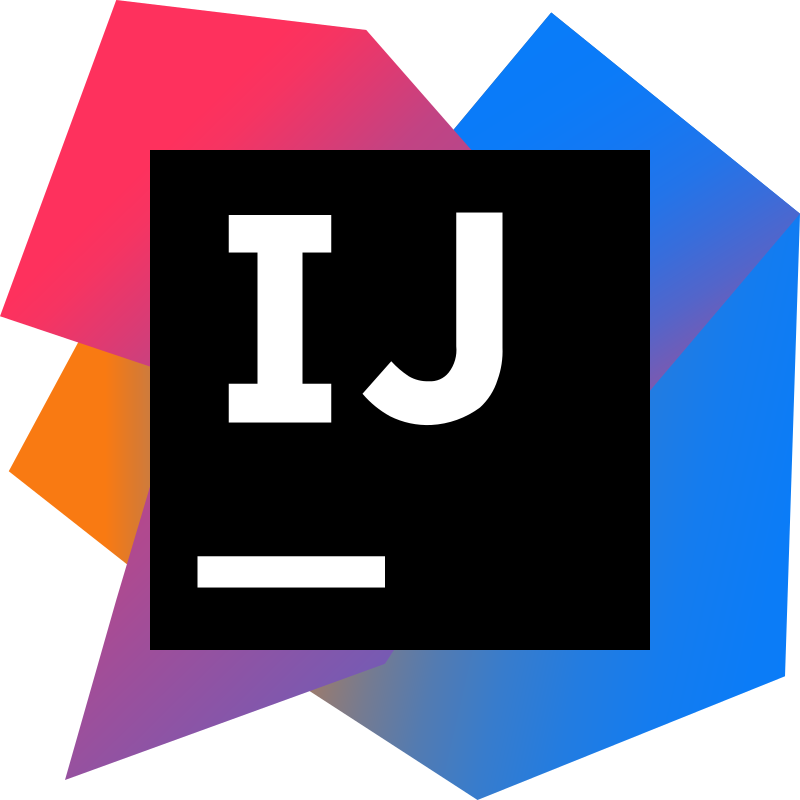

Hola, me llamo Fernando
Soy
Soy una persona curiosa y comprometida ‚Äîdemasiado a veces üòÖ‚Äî con todo lo que me apasiona. Esa curiosidad me ha llevado a explorar muchas ramas del conocimiento, y lejos de ser una distracci√≥n, ha sido mi mayor fortaleza. Gracias a ella he alcanzado metas que ni siquiera imaginaba, como dedicarme a la programaci√≥n. Programar siempre fue un objetivo en mi vida, pero durante mucho tiempo me fren√≥ el miedo a dar el primer paso. Hoy, con mucho trabajo y aprendizaje detrás, puedo decir que lo di... as√≠ que ponte c√≥mod@ y ¬°bienvenid@ a mi web!
ContactarMis Proyectos
Edición de Vídeo
Programación
Experiencia Profesional
Aunque aún no he tenido la oportunidad de trabajar en el sector tecnológico o audiovisual (mas allá de las prácticas formativas), confío plenamente en que el esfuerzo que he invertido en mi formación en las distintas áreas de conocimiento me permitirán acceder a mi primera experiencia laboral, donde podré demostrar de lo que soy capaz. Mi motivación es muy alta y tengo un fuerte deseo de seguir aprendiendo, como lo demuestra el hecho de que esta misma página web ha sido diseñada y desarrollada por mí. He construido este portfolio aplicando los conocimientos que estoy adquiriendo de forma autodidacta, complementando así los fundamentos adquiridos durante mis estudios en el Grado Superior de Desarrollo de Aplicaciones Multiplataforma (DAM), donde me enfoqué principalmente en el desarrollo backend, con el objetivo de convertirme algún día en un desarrollador fullstack.
Estoy abierto a nuevas oportunidades, colaboraciones o cualquier proyecto que me permita seguir creciendo y aportar valor.
Educación
09-2024
Certificación - Spring Boot 3, Spring 6 & Hibernate for Beginners
Durante esta formación he adquirido conocimientos sobre las bases de Spring Boot 3 y Spring 6, dos de las tecnologías más poderosas y ampliamente utilizadas en el desarrollo de aplicaciones empresariales. Durante el curso, aprendí a configurar, desarrollar y desplegar aplicaciones completas usando estos frameworks, optimizando tanto el backend como la integración con bases de datos.
06-2024
Grado Superior - Desarrollo de Aplicaciones Multiplataforma
Durante esta formación he adquirido conocimientos en el desarrollo de aplicaciones para diferentes plataformas, tanto móviles como de escritorio. Me he centrado en el desarrollo backend, aprendiendo a crear software utilizando tecnologías como Java con bases de datos SQL.
06-2021
Grado Universitario - Comunicación Audiovisual
Durante esta formación he adquirido un profundo conocimiento en la creación, producción y distribución de contenidos visuales. Asimismo, me he especializado principalmente en la edición de video, aprendiendo a utilizar herramientas profesionales para este fin, como diversos editores de vídeo y After Effects, lo que me ha permitido perfeccionar mis habilidades en la edición y postproducción. Esta formación me ha brindado la capacidad de crear contenidos audiovisuales de alta calidad, aplicando tanto técnicas creativas como conocimientos técnicos avanzados en la manipulación de imágenes y sonido.
06-2017
Grado Superior - Administración de Sistemas Informáticos en Red
Durante esta formación he adquirido conocimientos en la instalación, configuración y mantenimiento de sistemas informáticos. Además de la debida administración de servidores, tanto en sistemas Windows como Linux, así como en la gestión de redes locales y servicios asociados como DNS, DHCP, FTP y Active Directory.
Stack Tecnológico
Lenguajes de Programación


Frameworks


Bases de Datos


Herramientas
-

- 
IDEs y Editores de Código
- 
-

-